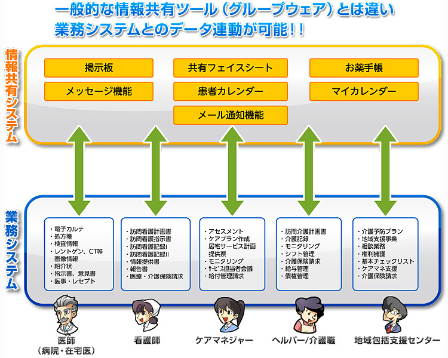
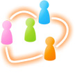
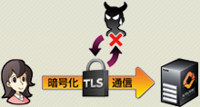
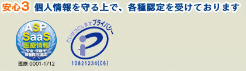
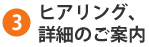
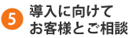
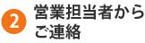
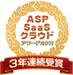
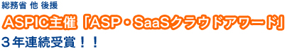

医療・看護・介護をつなぎ地域包括ケアに貢献しています
多職種連携における課題
在宅医療を行う上で必要不可欠である多職種連携ですが、実際に現場で
連携を行うには様々な課題があります。
課題１ 患者について多職種間で情報の交換や、話し合う機会が不足している…
課題２ 情報が職種ごとに分散し、患者情報が不十分なので適切なサービスを行うのが困難…
課題３ 多職種連携は必要だが、そのための書類作成や連絡等に多大な労力を要している…
カナミックネットワークはそれらの課題を解決し、多職種連携を実現します！
カナミックネットワークが提供する特許取得の情報共有システム
地域包括ケアシステムを実現するためには、在宅医療の推進と多職種連携が必要です。
これを可能にして注目を浴びているのがカナミックネットワークが提供する情報共有システムです。
医療・看護・介護の専門職で必要とされる情報をシームレスに提供し、チームケアを実現しています。
住み慣れた地域で暮らす高齢者の方々に質の高いサービスを提供できる唯一の情報共有基盤であると自負しております。
スマートフォンやタブレット端末など、シーンに合った端末から利用できます！
必要な患者情報を業務システムと連動でき、連携するための手間も大幅に軽減できます！
システムの主な特徴
インターネットを活用したクラウド型情報共有システム
弊社地域包括ケアシステムは、Webシステム方式にてご提供しております。インターネットに繋がる環境とPCやスマートフォンをご準備いただくだけで、すぐに利用することができます。
サーバの運用・保守・管理は全て弊社が行いますので、お客様内でのサーバ管理等の手間から開放されます。
特許取得の包括ケアシステム
多職種が情報共有するための「情報共有プラットフォーム」技術を保有しています。この特許技術は、今まで各事業者でバラバラに管理されていた患者・被介護者の情報を１つに紐付けることが可能な技術です。この技術を活用する事で、職種・法人を超えたリアルタイムな情報共有を可能にしています。また、現場が使用する業務システムに情報共有プラットフォームが組み込まれている事に最大の利点があります。この情報連携基盤は、多職種他法人が情報共有を行う事が出来る自治体・医療・介護のプラットフォームとしてご活用頂いています。
スマートフォン、タブレット端末にも対応

今まではシステムと言えばパソコンを使うことが常識でしたが、最近のデバイスの進化は目覚ましく、iPhoneやAndroidなどのスマートフォンやiPadなどのタブレット端末がどんどん普及しています。在宅医療ではどこにでも持ち運べるスマートフォンやタブレット端末が理想的です。
カナミックのシステムではこの最先端の端末からもシステムがご利用になれます。
※iOSやAndroidのバージョンなど端末固有の仕様等によりシステムが正常に動作しない場合がございます。動作環境については別途お問合せください。
先進事例のご紹介
弊社情報共有システムを導入し、実際に多職種連携にご活用されている事例をご紹介します。
「東京大学高齢社会総合研究機構」が行う多職種連携モデル事業に、弊社の情報共有システムを提供しています。これからの高齢社会におけるまちづくりに向け、共同で研究と実証を繰り返しております。
テレビ埼玉にて放送された「在宅ケア最前線～生きぬくちから～」に東京大学特任教授の辻哲夫先生と弊社専務取締役の山本拓真が出演し、柏プロジェクトの取組みについて話されました。
横浜市で在宅医療の推進強化に取り組む「在宅医ネットよこはま」様は、多職種連携のための情報共有ネットワークの構成を目的に弊社システムを活用して「顔の見える連携」を実現し、より質の高い在宅医療の提供を目指し活動されています。
docomo Business Onlineにて「在宅医ネットよこはま」の事例が紹介されています。ドコモタブレットを導入し、カナミッククラウドサービスを活用した多職種間情報共有の先進的な事例が、動画でわかりやすく紹介されています。
「医療法人ナカノ会」様では鹿児島市内での地域包括ケアシステムの構築を目指し、活動されています。積極的なＩＣＴの活用により、鹿児島市内の鹿児島市民と医療・看護・介護サービス提供者、行政の情報交換、情報共有を図り教育・啓蒙支援を行うとともに多職種連携で機能する効率的な医療・介護サービス構築を推進中です。
（平成24年度在宅医療連携拠点事業採択事業者＝「ナカノ在宅医療連携拠点センター」にてカナミックの情報共有システムと居宅療養管理指導・訪問看護など業務システムと併用を進めています）
災害にも強い！安心の情報セキュリティ
厚生労働省の「医療情報システムの安全管理に関するガイドライン（第 4.1 版）」に
沿った運用が可能な数少ない情報共有システムです。

システムご利用のお客様のデータは強固なデータセンターで厳重に管理しております。また、弊社サービスでは国内の複数のデータセンターで同期を取って管理・保管を行っております。万が一の災害時にもデータが消失してしまうリスクがありません。
通信路でのセキュリティとしては、IPsec VPNやSSL-VPNなどの暗号方式を選択できますので、データの盗聴や改ざん、なりすまし等を防ぐことができます。
個人情報保護の観点での「プライバシーマーク」やASP・SaaSを安全に利用できるように始まった「ASP・SaaS安全・信頼性情報開示認定制度」など公的な第三者評価を受けている業界でも数少ないシステムです。
導入実績
システムユーザー実績約171,000名。
全国で1,323地域、約33,700事業所の医療法人・介護事業所へのシステム導入実績があります。
（2022年3月時点、無料ユーザーを含む）
在宅医療診療所や自治体において弊社の情報共有システムの有効性が認められ、
多くのお客様よりご好評をいただいております。
システム導入までの流れ
- 
- 
- 
お電話、またはお問合せフォームよりお問合せください。
営業担当者から、ご連絡させて頂きます。
業界に特化し、多数のソリューション実績を持っている専門の営業マンが直接お伺いしてヒアリング及びご説明をさせて頂きます。現状の問題点や解決したいポイントを明確にし、ソリューションをご提案させて頂きます。お気軽にご相談ください。
システムの利用申し込みをして頂きます。
弊社にはシステム導入支援専門の部署がございます。既存システムからのデータ移行や操作教育など、導入に向けて詳しくスケジュールを立てさせて頂きます。
全てのステップで専門のスタッフが担当させて頂きますので、安心してシステム導入を出来ます。
主な受賞歴
平成23年6月 ASP・SaaS部門「ASPIC会長特別賞」受賞
平成22年2月 ASP・SaaS部門「委員会特別賞」受賞
平成21年2月 ASP・SaaS部門「ベスト公共部門賞」受賞
平成19年11月
「地域連携を実現するための在宅介護支援ネットワークシステム」プランにて最優秀賞受賞